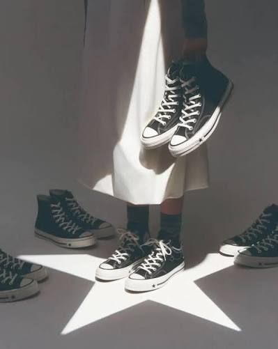

Converse Pulls Advertisement After Backlash Over Imagery
National | Business
Published: Sunday, September 20, 2026

Converse has removed an advertisement from its social media platforms following online criticism over imagery that some viewers said evoked Ku Klux Klan symbolism and the history of lynching in the United States.
The advertisement was part of Converse’s promotional campaign for its Chuck 70 X sneaker and featured South Korean singer Karina, a member of the K-pop group aespa.
In the photograph, Karina stands beneath a large star-shaped light formation while wearing a long white skirt and holding a pair of black Converse sneakers. Online users focused on the lighting and composition, arguing that the triangular shape created around the model’s clothing resembled a pointed hood. Others said the positioning of the shoes created an association with hanging legs.
The reaction intensified after an uncropped version of the image circulated online, prompting additional discussion about the campaign.
Converse Responds
Converse, which is owned by Nike, acknowledged the controversy and apologized for the advertisement.
The company said it understood why people found the image upsetting and stated that the advertisement had been removed from its channels. Converse also said it was working to remove the image from other locations where it had appeared.
The campaign was connected to the Chuck 70 X and Run Star Crush products, which were promoted internationally following their August 27 release.
A Second Advertisement Draws Attention
The controversy also brought renewed attention to another Converse campaign.
That image, associated with a Converse collaboration with Copenhagen-based lifestyle brand Palmes, showed a person on a ladder while sneakers appeared to hang from a tree. Another person was visible in the scene.
After the Karina advertisement generated criticism, social media users began sharing the second image alongside it, arguing that the two advertisements raised similar concerns about visual symbolism.
The reaction has largely taken place online, with users debating whether the imagery was intentional, coincidental or simply a significant creative-design failure.
Why the Imagery Has Drawn Such Strong Reactions
The Ku Klux Klan has a documented history of using white hoods and organized racial violence against Black Americans and others, particularly during periods of resistance to Black political and civil-rights advancement.
Lynching also occupies a significant place in American history as a form of racial terror, particularly against Black Americans.
Because of that history, imagery involving pointed white hoods, hanging figures or similar compositions can carry historical associations beyond their immediate commercial context.
Converse’s decision to remove the advertisement came after those associations became a major subject of discussion online.
The incident highlights the potential consequences brands face when advertising imagery is interpreted through the lens of historical or cultural symbolism.
For Converse, the campaign was intended to promote new footwear. Instead, the visual presentation became the focus of a controversy that led the company to publicly apologize and withdraw the advertisement.